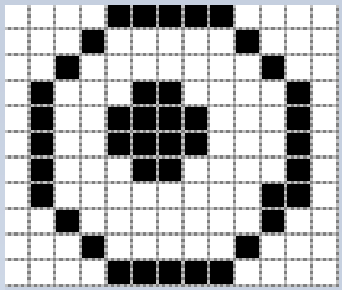

Material de apoio para a disciplina Linguagem de Programação da UACSA/UFRPE
Produzido pelo prof. João Pimentel
O computador é um aparelho eletrônico. Todo aparelho eletrônico funciona com base em eletricidade (ohhhhh!)
Um fio elétrico 🔌 pode estar, a qualquer momento, em um desses dois estados: com eletricidade ou sem eletricidade
Se mandarmos energia para um LED, podemos acende-lo e apaga-lo. Aperte nessa bateria:
Se combinarmos vários LEDs, podemos formar números. Tente formar o número 5:
Já se passarmos energia a vários quadradinhos (pixels), podemos formar imagens:
Para não ficar dizendo "sem energia" e "com energia" o tempo todo, o pessoal escolheu dois símbolos: 0 e 1
Como só são dois símbolos, eles são chamados de digitos binários: bits
Se a eletricidade pode ser usada para representar números, imagens, etc., e bits representam a eletricidade que passa (ou não) em algum circuito, então os bits também podem representar números, imagens, etc.
Faz sentido?
Mas quem é que decide qual o significado de uma combinação de bits? Os fabricantes dos equipamentos 😕
Imagine a zona: cada fabricante usando bits de formas diferentes! Samsung, Motorola, Xiaomi, cada uma com um significado diferente para os conjuntos de bits.
Para evitar essa zona, muita coisa é padronizada.
Um padrão bem famoso é o ASCII, um padrão de caracteres que diz que 1000001 é a letra A, 1001110 é o N, e assim por diante.
| sequência de bits |
representa… |
|---|---|
| 0111110 | > |
| 0111111 | ? |
| 1000000 | @ |
| 1000001 | A |
| 1000010 | B |
| 1000011 | C |
| 1000100 | D |
| 1000101 | E |
O UNICODE é um padrão para codificação de textos muito usado atualmente. Além de letras e números de diferentes alfabetos, ele também inclui os emojis!
11111011001000010, por exemplo, representa uma "face levemente sorridente".
Coisas de tipos diferentes têm padrões diferentes. Por exemplo, a mesma sequência de bits (1101011) pode representar a letra k, o número decimal 107, e um tom de vermelho
Neste curso nós vamos trabalhar com 4 tipos básicos do Python:
| int | números inteiros |
| float | números quebrados |
| string | texto |
| boolean | True ou False |
Display de 7 segmentos programável: Rüdiger Appel